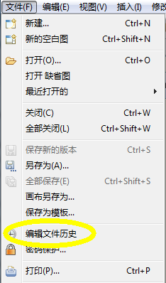
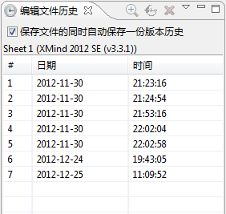
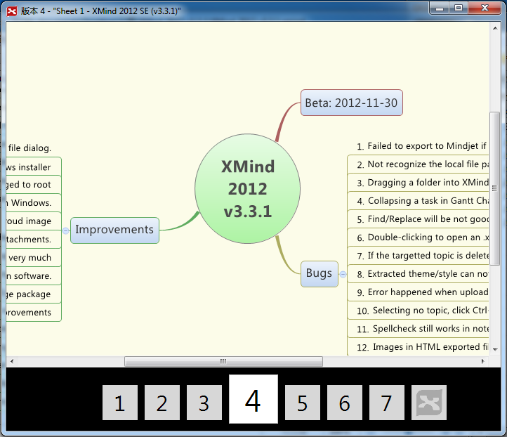

在您每一次保存文件的时候，XMind都会为您在这个文件中保存一个版本。因此，您可以很轻松地浏览之前的每一个版本，甚至返回到某一个特殊的版本。
从菜单打开"文件编辑历史"视图
文件编辑历史 视图 选择某个版本之后，您可以选择查看，回退，或者删除。
浏览所有已存的版本 左右方向键可以帮助您方便快捷地在不同版本之间切换
注意:由于所有的文件历史都是保存在当前的.xmind文件中， 所以文件就会随着编辑历史的增加而变大。如果一个.xmind文件有很多历史版本，这个文件可能就会过大。
XMind也知道并不是所有人都需要文件编辑历史，所以在 文件编辑历史 视图中，只要不勾选“保存文件的同时自动保存版本历史”这个选项，就可以不激活这个功能。